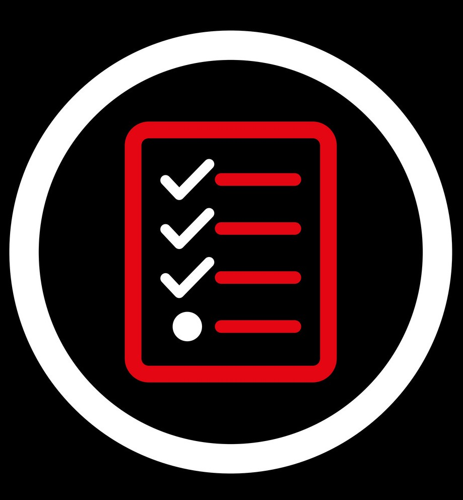
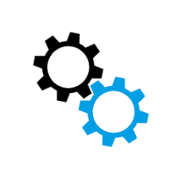

Writer – Michelle Lagos CEO
This is just a friendly reminder that on January 14, 2020, Microsoft will end support for Windows 7. This means that Microsoft will not update, fix or support software, nor handle security or technical issues for Windows 7.
Sorry to add a stronger splash of reality to the time clock but understand if a new threat emerges, hackers can — and likely will— take advantage and try to pose as a serious cybersecurity threat to your business. Essentially start working with your IT professionals and website developers NOW, knowing that many people are addressing these issues at the last minute, making your professionals booked in tightly.
What can I do?
Good question. Quite a bit actually. Ideally, you’ll want to migrate to Windows 10 and take this opportunity to tighten your security, leverage extension options as necessary, and consider upgrading the Office 365.
…………………………………………………………………………………………………………………………………………………………………………………………………….
CAN I STILL USE WINDOWS 7?
Technically, yes, but businesses who choose not to upgrade from Windows 7 to Windows 10 will face problems, including:
Increased risk of a security breach because Microsoft will no longer support operating system or security updates. Potential for slower processing times if you use newer applications on an older operating system. ……………………………………………………………………………………………………………………………………………………………………………………………WHAT ARE THE MINIMUM WINDOWS 10 SYSTEM REQUIREMENTS?
To move from Windows 7 or 8.1 to Windows 10, you need:
Processor: 1 gigahertz (GHz) or faster processor or SoC
RAM: 1 gigabyte (GB) for 32-bit or 2 GB for 64-bit
Hard disk space: 16 GB for 32-bit OS or 20 GB for 64-bit OS
Graphics card: DirectX 9 or later with WDDM 1.0 driver
Display: 800 x 600
Additionally, certain Windows 10 features may require specific hardware. For example, Client Hyper-V requires a 64-bit system with second level address translation (SLAT) capabilities and additional 2 GB of RAM (available in Windows 10 Pro and Windows 10 Enterprise only.)
More advanced security features require modern security chips on the motherboard, which may necessitate a hardware upgrade.

Microsoft will also no longer support
SQL Server 2008 and 2008 R2 (July 2019)
Windows Server 2008 (January 2020)
Windows Server 2008 R2 (January 2020)
Exchange 2010 (October 2020)
Office 2010 (October 2020)
Sharepoint Server 2010 (October 2020)
Project Server 2010 (October 2020)

Do enjoy the holidays but go into action. Cheers!
Contact Us for IT and system recommendations.